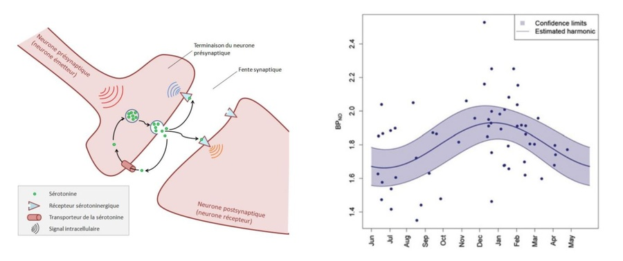

Pour la plupart d’entre nous et malgré les contrariétés politiques qui affligent certains, l’été est synonyme de bonne humeur. Cette tendance se répercute directement sur les plateformes web comme Twitter où les mots à connotation positive deviennent plus fréquents (Golder & Maci, 2011) tandis que les mots à connotation négative régressent. L’analyse des changements d’humeur sur le web (“sentiment analysis” en anglais) suggère que même nos anxiétés s’apaisent puisque les recherches Wikipedia associées à différents types de maladies chutent pendant la période estivale.
Que se passe-t-il donc dans notre cerveau qui permettrait d’expliquer que notre vocabulaire et nos humeurs se réchauffent à mesure que nos peaux caramélisent? Pour répondre à cette question, il faut se pencher sur un domaine scientifique aussi vaste que passionnant: la chronobiologie qui, comme son étymologie l’indique, s’intéresse à la manière dont les organismes s’adaptent aux cycles temporels de Dame Nature.

Si la structure du cerveau humain est remarquablement stable comparée à celle de mammifères plus petits (comme l’écureuil dont le cerveau rabougrit de 10 à 25%en hiver!), la plupart des systèmes de notre organisme s’adaptent malgré tout, à des degrés divers, aux différences d’illumination, d’humidité et de température qui caractérisent chaque saison.
Mais en matière de “saisonnalité des émotions”, c’est d’abord du côté de la fameuse sérotonine qu’il faut se pencher. Impliquée dans le contrôle de l’humeur, de l’apprentissage, de l’appétit, ou encore de l’impulsivité, une série de recherches démontre l’existence d’un rythme “circannuel” au niveau de ce neuromodulateur complexe qui constitue par ailleurs une des cibles thérapeutiques les plus importantes pour la psychiatrie contemporaine.
Sérotonine et soleil
Ainsi, le transporteur membranaire de la sérotonine, qui sert à évacuer la molécule après qu’elle a été libérée, voit sa concentration diminuer en été et augmenter en hiver (Praschak-Rieder et al., 2008; Kalbitzer et al.,2010). Cette variation annuelle est d’autant plus pertinente qu’elle paraît absente chez ceux qui souffrent de dépression saisonnière (seasonal affective disorder en anglais; McMahon et al., 2016). Et il est frappant de constater que les antidépresseurs classiques miment en quelque sorte l’effet du soleil, puisqu’ils agissent eux-aussi en réduisant l’efficacité du transporteur de la sérotonine.
Deux autres facettes du système fluctuent elles-aussi au cours de l’année: l’activité des neurones sérotoninergiques eux-mêmes augmente avec la durée du jour (Green et al., 2015) tout comme la densité de certains récepteurs qui font le pont entre le “signal sérotonine” et notre comportement (les 5HT1A, pour les puristes). Sans parler des cycles observés dans les voies de synthèse et de dégradation de la molécule (Maes et al., 1995; Lambert et al., 2002; Luykx et al., 2013)… Plus de signal à la base, moins d’évacuation, et plus de récepteurs pour le recevoir, tout cela va dans le même sens et il est donc assez naturel de penser que le système sérotoninergique dans son ensemble participe de façon significative à la fluctuation de nos humeurs, et peut-être même d’une partie de nos capacités cognitives (Keller et al., 2005; Meyer et al., 2016)!

Faut-il donc faire le plein de soleil en été pour se charger en bonne humeur pour toute l’année? Est-ce que le phénomène à un rapport avec les bains de soleil excessifs ou l’utilisation intensive des cabines à UV observés chez certains? Difficile à dire, d’autant plus qu’on ne sait pas encore si la lumière a un impact direct ou si les effets observés sont dûs à l’influence d’un autre facteur, qui pourrait être lié aux changements d’alimentation ou à l’augmentation de l’exercice physique en été.
Il serait donc réducteur voire téméraire d’espérer tout expliquer par la sérotonine, d’autant plus que d’autres signaux chimiques apparentés (comme la dopamine) varient eux aussi au gré des saisons. En ce qui concerne l’exposition aux UV solaires ou artificiels, une étude récente menée chez la souris suggère d’ailleurs que ce sont en fait les endorphines qui expliquent le développement de véritables comportement addictifs (Fell et al., 2014). L’idée est assez simple: l’exposition prolongée aux UV entraîne une série de micro-traumatismes pour notre peau, qui réagit en libérant ces antidouleurs naturels que sont les endorphines. En retour, ces endorphines suscitent une sensation de détente et de bien-être similaire à ce que ressentent les joggers après une longue course. Et à l’instar des sportifs, une petite proportion des individus sensibles à ce mécanisme développeraient une forme d’addiction aux UV qui préoccupe plus en plus aux États-Unis.
Un tableau estival pas si rose que ça
De plus, comme souvent en science, ce qui semble évident au premier abord se révèle en réalité plus complexe qu’il n’y paraît. Par exemple, contrairement à une croyance populaire solidement enracinée, ce n’est pas pendant l’hiver que les détresses psychologiques les plus profondes se manifestent. La vaste majorité des données disponibles indique au contraire que les taux de suicide atteignent leur maximum à la fin du printemps et au début de l’été.
Menée aux États-Unis et au Mexique, une étude parue le 28 juillet dernier dans la revue Nature Climate Change montre même l’existence d’une corrélation nette entre taux de suicide et variations de température d’une année sur l’autre. Autrement dit, pour un mois donné, les taux de suicide augmentent lorsque les températures sont au-dessus des valeurs habituelles. Et les tailles d’effet sont si impressionnantes que les chercheurs estiment que le réchauffement climatique pourrait avoir un impact similaire à celui une crise économique d’ici 2050: pour chaque degré supplémentaire, le taux de suicide augmente en effet de 0.7% aux US et de 2.1% au Mexique. Pour tenter de mieux saisir le lien entre ces deux variables, les chercheurs ont ensuite analysé 600 millions de tweets postés dans ces deux zones géographiques. De façon inattendue mais cohérente avec les observations épidémiologiques, cette seconde analyse révèle une corrélation positive entre température mensuelle et le nombre de “tweets à connotation dépressive”.
L’été amène donc son lot de réjouissances (et de sérotonine?) à la majorité d’entre nous, mais il représente aussi une période difficile pour les personnes vulnérables et fragilisées. Si les auteurs de l’étude américaine soutiennent l’idée que l’augmentation du taux de suicide repose sur un mécanisme biologique, ils ne précisent pas lequel. On sait en tout cas que l’été peut exacerber l’isolement social, notamment chez les gens qui n’ont pas la chance de partir en vacances et chez les personnes âgées (environ 40% de la population en France).
D’où l’utilité des cartes postales!